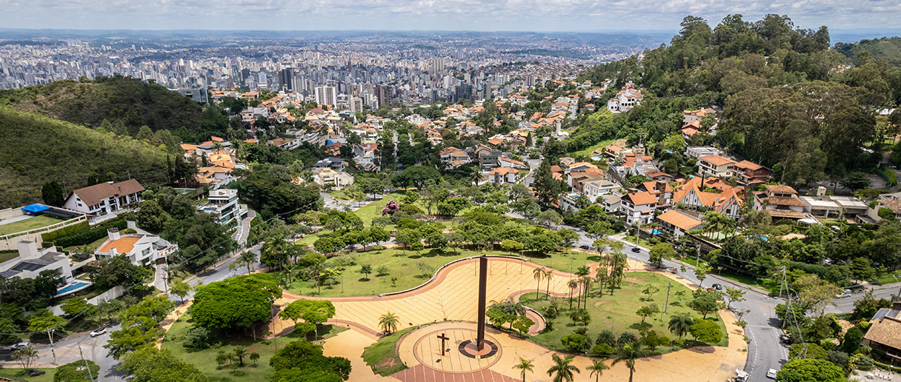
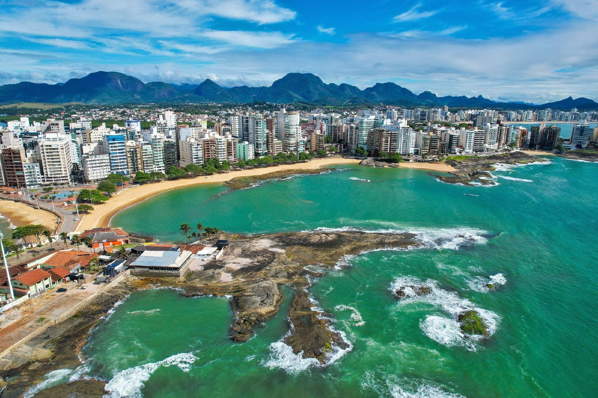

Estado de São Paulo
São Paulo é o estado mais populoso e economicamente dinâmico do Brasil, conhecido por sua diversidade cultural e industrial. É um polo de inovação, com cidades vibrantes e uma rica história.

Estado de Minas Gerais
Minas Gerais é famoso por suas montanhas, história colonial e rica cultura gastronômica. O estado é um importante centro de mineração e patrimônio histórico do Brasil.

Estado do Rio de Janeiro
O Rio de Janeiro é conhecido por suas praias icônicas, como Copacabana, e o famoso Cristo Redentor. É um destino turístico vibrante, com cultura rica e paisagens deslumbrantes.

Estado de Espírito Santo
O Espírito Santo é conhecido por suas praias tranquilas e pela forte tradição na pesca e na culinária capixaba. O estado também se destaca pela diversidade cultural e belezas naturais.